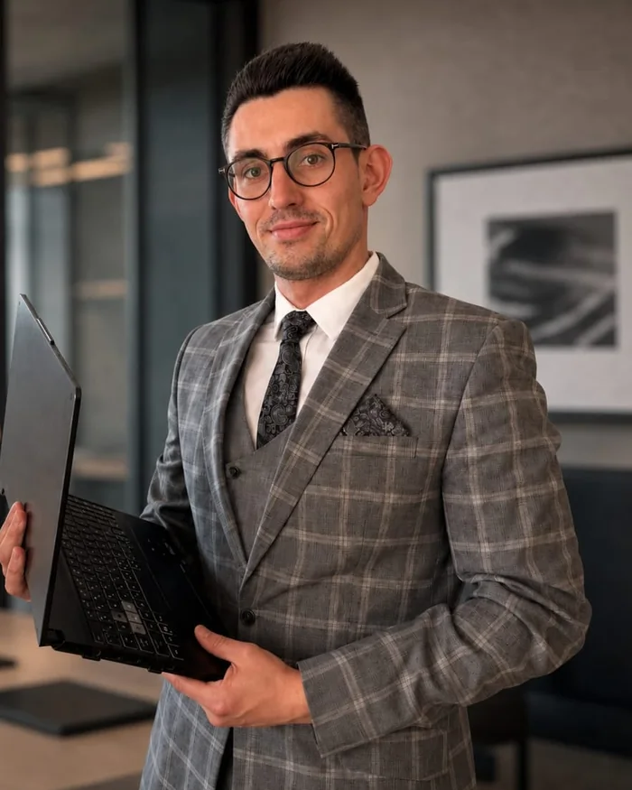

Filip Chlewiński
Specjalista ds. funduszy unijnych i doradztwa biznesowego
Magister prawa i aplikant radcowski, posiadający szerokie doświadczenie w obsłudze prawnej, funduszach unijnych, finansowaniu inwestycji oraz doradztwie biznesowym. Specjalizuje się w analizie potrzeb przedsiębiorstw, identyfikowaniu dostępnych źródeł finansowania oraz kompleksowym przygotowywaniu i koordynacji projektów inwestycyjnych.
Łączy wiedzę prawną i finansową z praktycznym doświadczeniem w przygotowywaniu dokumentacji aplikacyjnej, biznesplanów i analiz ekonomicznych.
- Specjalizacja
- Automatyzacja i robotyzacja w MŚP · Wzornictwo w MŚP · Gospodarka o obiegu zamkniętym (GOZ) · Projekty eksportowe · Pożyczki unijne i preferencyjne finansowanie
- Odpowiada za
- Analizę projektów i możliwości finansowania, kontakt z klientem, przygotowanie dokumentacji aplikacyjnej, biznesplanów i analiz ekonomicznych oraz koordynację projektów
- Wykształcenie
- Magister prawa
Aplikant radcowski